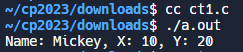

C_EX <<
Previous Next >> ANSIC
CEX_T
1
/* =========================
struct – 3.
========================= */
#include <stdio.h>
#include <string.h>
/* ====================
struct Mouse.
==================== */
struct Mouse
{
int xPos, yPos;
char Name[10];
};
/* ====================
Copy Mouse 1
==================== */
void cpyMouse1(struct Mouse *tgt, struct Mouse *src)
{
tgt->xPos = src->xPos;
tgt->yPos = src->yPos;
strcpy(tgt->Name, src->Name);
}
/* ====================
main function.
==================== */
int main()
{
struct Mouse myMouse, yourMouse;
yourMouse.xPos = 10;
yourMouse.yPos = 20;
strcpy(yourMouse.Name, "Mickey");
cpyMouse1(&myMouse, &yourMouse);
printf("Name: %s, X: %d, Y: %d\n", myMouse.Name, myMouse.xPos, myMouse.yPos);
return 0;
}
解釋：
1. `#include <stdio.h>`：包含標準輸入/輸出庫的指令，允許使用 `printf` 和其他相關的輸出函式。
2. `#include <string.h>`：包含字串操作相關的標頭文件，允許使用 `strcpy` 函式來複製字串。
3. `struct Mouse`：定義了一個結構體 `Mouse`，包含三個成員變數：`xPos`（代表滑鼠的X座標）、`yPos`（代表滑鼠的Y座標）、`Name`（代表滑鼠的名字，以字元陣列形式存儲）。
4. `void cpyMouse1(struct Mouse *tgt, struct Mouse *src)`：定義了一個函式 `cpyMouse1`，用於將來源滑鼠結構的數據複製到目標滑鼠結構。函式接受兩個結構體指針作為參數，即目標滑鼠結構和來源滑鼠結構。
5. `tgt->xPos = src->xPos;`：將來源滑鼠的X座標複製到目標滑鼠。
6. `tgt->yPos = src->yPos;`：將來源滑鼠的Y座標複製到目標滑鼠。
7. `strcpy(tgt->Name, src->Name);`：使用 `strcpy` 函式將來源滑鼠的名字複製到目標滑鼠。這裡假設 `Name` 是以字元陣列形式表示的名字。
8. `int main()`：主函式的開始。
9. `struct Mouse myMouse, yourMouse;`：宣告了兩個 `Mouse` 結構的變數 `myMouse` 和 `yourMouse`。
10. `yourMouse.xPos = 10;`：為 `yourMouse` 的X座標賦值為10。
11. `yourMouse.yPos = 20;`：為 `yourMouse` 的Y座標賦值為20。
12. `strcpy(yourMouse.Name, "Mickey");`：將字串 "Mickey" 複製到 `yourMouse` 的名字中。
13. `cpyMouse1(&myMouse, &yourMouse);`：調用函式 `cpyMouse1`，將 `yourMouse` 的內容複製到 `myMouse`。
14. `printf("Name: %s, X: %d, Y: %d\n", myMouse.Name, myMouse.xPos, myMouse.yPos);`：使用 `printf` 函式輸出 `myMouse` 結構的內容，包括名字、X座標和Y座標。
15. `return 0;`：主函式正常結束，返回值為0。

2
/* =========================
#define 的範例 2.
========================= */
#include <stdio.h>
#define TRUE 1
#define FALSE 0
#define BOOL int
/* ====================
如果傳入值大於 10, 則傳回 TRUE
==================== */
BOOL is_greater_than_10(int i)
{
if (i > 10)
return TRUE;
else
return FALSE;
}
/* ====================
main function.
==================== */
int main()
{
int i;
BOOL result;
printf("Input a number: ");
// 檢查 scanf 的返回值
if (scanf("%d", &i) != 1) {
printf("Error reading input.\n");
return 1; // 返回非零值表示錯誤
}
result = is_greater_than_10(i);
if (result == TRUE)
printf("Greater than 10!\n"); /* 大於 10 */
else
printf("Not greater than 10!\n"); /* 不大於 10 */
return 0;
}
解釋：
1. `#include <stdio.h>`：包含標準輸入/輸出庫的指令，允許使用 `printf` 和其他相關的輸出函式。
2. `#define TRUE 1`：使用 `#define` 指令定義常數 `TRUE`，其值為1。
3. `#define FALSE 0`：使用 `#define` 指令定義常數 `FALSE`，其值為0。
4. `#define BOOL int`：使用 `#define` 指令定義 `BOOL` 為 `int`，將 `BOOL` 視為整數型別。
5. `BOOL is_greater_than_10(int i)`：定義了一個函式 `is_greater_than_10`，接受一個整數參數 `i`，返回 `BOOL` 型別（實際上是 `int`）。如果 `i` 大於10，則返回 `TRUE`，否則返回 `FALSE`。
6. `int main()`：主函式的開始。
7. `int i;`：宣告一個整數變數 `i` 來接受用戶輸入的數字。
8. `BOOL result;`：宣告一個 `BOOL`（實際上是 `int`）型別的變數 `result` 來存儲函式的返回值。
9. `printf("Input a number: ");`：使用 `printf` 函式輸出提示，要求用戶輸入一個數字。
10. `if (scanf("%d", &i) != 1)`：使用 `scanf` 函式讀取用戶輸入的數字，檢查其返回值，如果不等於1，表示讀取失敗，輸出錯誤消息，並返回1（非零值表示錯誤）。
11. `result = is_greater_than_10(i);`：調用函式 `is_greater_than_10`，將用戶輸入的數字傳入，並將返回值存入 `result`。
12. `if (result == TRUE)`：檢查 `result` 是否等於 `TRUE`，如果是，表示輸入的數字大於10，輸出 "Greater than 10!"。
13. `else`：如果條件不滿足，表示輸入的數字不大於10，輸出 "Not greater than 10!"。
14. `return 0;`：主函式正常結束，返回值為0。
3
/* ====================
& operator.
==================== */
#include <stdio.h>
int main()
{
int *pointer_a, a;
pointer_a = &a;
a = 10;
printf("%d, %d\n", a, *pointer_a);
return 0;
}
解釋：
1. `#include <stdio.h>`：包含標準輸入/輸出庫的指令，允許使用 `printf` 和其他相關的輸出函式。
2. `int *pointer_a, a;`：宣告了一個整數指標 `pointer_a` 和一個整數變數 `a`。
3. `pointer_a = &a;`：將變數 `a` 的地址賦值給指標 `pointer_a`。`&` 運算符用於取得變數的地址。
4. `a = 10;`：將變數 `a` 的值設置為10。
5. `printf("%d, %d\n", a, *pointer_a);`：使用 `printf` 函式輸出變數 `a` 的值和指標 `pointer_a` 所指向的地址的值。`*` 運算符用於解引用指標，獲取該地址存儲的值。
6. `return 0;`：主函式正常結束，返回值為0。
4
/* ====================
pointer – 6
==================== */
#include <stdio.h>
int main()
{
char *str = "Eric";
printf("%c\n", *(str + 0)); /* 也可寫 printf("%c", str[0] ); */
printf("%c\n", *(str + 1)); /* 也可寫 printf("%c", str[1] ); */
printf("%c\n", *(str + 2)); /* 也可寫 printf("%c", str[2] ); */
printf("%c\n", *(str + 3)); /* 也可寫 printf("%c", str[3] ); */
return 0;
}
解釋：
1. `#include <stdio.h>`：包含標準輸入/輸出庫的指令，允許使用 `printf` 和其他相關的輸出函式。
2. `int main()`：定義主函式。
3. `char *str = "Eric";`：宣告一個指向字符的指標 `str`，並將其指向一個包含字符串 "Eric" 的字符陣列。在C中，字符串實際上是以null結尾的字符陣列。
4. `printf("%c\n", *(str + 0));`：使用指標的算術運算，輸出指向 `str` 開始的字符陣列的第一個元素，即 'E'。也可以寫成 `printf("%c\n", str[0]);`。
5. `printf("%c\n", *(str + 1));`：輸出 `str` 的第二個元素，即 'r'。也可以寫成 `printf("%c\n", str[1]);`。
6. `printf("%c\n", *(str + 2));`：輸出 `str` 的第三個元素，即 'i'。也可以寫成 `printf("%c\n", str[2]);`。
7. `printf("%c\n", *(str + 3));`：輸出 `str` 的第四個元素，即 'c'。也可以寫成 `printf("%c\n", str[3]);`。
8. `return 0;`：主函式正常結束，返回值為0。
5
/* ====================
2d array.
==================== */
#include <stdio.h>
int main()
{
int array[3][3];
int x, y;
array[0][0] = 1;
array[0][1] = 2;
array[0][2] = 3;
array[1][0] = 4;
array[1][1] = 5;
array[1][2] = 6;
array[2][0] = 7;
array[2][1] = 8;
array[2][2] = 9;
for (x = 0; x < 3; x++)
{
for (y = 0; y < 3; y++)
{
printf("%d,", array[x][y]);
}
}
return 0;
}
解釋：
1. `#include <stdio.h>`：包含標準輸入/輸出庫的指令，允許使用 `printf` 和其他相關的輸出函式。
2. `int main()`：定義主函式。
3. `int array[3][3];`：宣告一個3x3的整數二維陣列 `array`。
4. `int x, y;`：宣告整數變數 `x` 和 `y` 作為迴圈計數器。
5. `array[0][0] = 1;` 到 `array[2][2] = 9;`：將數字 1 到 9 分別賦值給二維陣列中的元素。
6. `for (x = 0; x < 3; x++)`：外層迴圈，從0到2，遍歷二維陣列的行。
7. `for (y = 0; y < 3; y++)`：內層迴圈，從0到2，遍歷二維陣列的列。
8. `printf("%d,", array[x][y]);`：輸出二維陣列中當前位置的元素值，並在每個元素值後面加上逗號。
9. `return 0;`：主函式正常結束，返回值為0。
6
/* ====================
array - 1.
==================== */
#include <stdio.h>
int main()
{
int grade[5]; /* size = 5 的 array */
int i;
grade[0] = 75; /* 1st element */
grade[1] = 80; /* 2nd element */
grade[2] = 85; /* 3rd element */
grade[3] = 70; /* 4th element */
grade[4] = 90; /* 5th element */
for (i = 0; i < 5; i++)
{
printf("Number %d = %d\n", i, grade[i]);
}
return 0;
}
解釋：
1. `#include <stdio.h>`：包含標準輸入/輸出庫的指令，允許使用 `printf` 和其他相關的輸出函式。
2. `int main()`：定義主函式。
3. `int grade[5];`：宣告一個包含5個整數元素的陣列 `grade`。
4. `int i;`：宣告整數變數 `i`，將用於迴圈計數。
5. `grade[0] = 75;` 到 `grade[4] = 90;`：將分數賦值給陣列中的每個元素。
6. `for (i = 0; i < 5; i++)`：使用 `for` 迴圈，從0到4，遍歷陣列的每個元素。
7. `printf("Number %d = %d\n", i, grade[i]);`：使用 `printf` 函式，輸出當前陣列元素的索引和值。
8. `return 0;`：主函式正常結束，返回值為0。
7
/* ====================
do - while.
==================== */
#include <stdio.h>
int main()
{
int i, j;
i = 0;
j = 10; /* 迴圈外先設定初值 */
do
{
printf("i = %d, ", i);
printf("j = %d\n", j);
i++;
j++;
} while (i < 6); /* 檢查條件的地方 */
return 0;
}
解釋：
1. `#include <stdio.h>`：包含標準輸入/輸出庫的指令，以便使用 `printf` 等相關的輸出函式。
2. `int main()`：定義主函式。
3. `int i, j;`：宣告整數變數 `i` 和 `j`。
4. `i = 0;` 和 `j = 10;`：給變數 `i` 賦值0，`j` 賦值10。
5. `do`：開始 `do-while` 迴圈，這部分的代碼將至少執行一次。
6. `{`：迴圈的開始。
7. `printf("i = %d, ", i);` 和 `printf("j = %d\n", j);`：使用 `printf` 函式印出 `i` 和 `j` 的值。
8. `i++;` 和 `j++;`：將 `i` 和 `j` 遞增。
9. `} while (i < 6);`：`do-while` 迴圈的結尾。在這裡，條件 `i < 6` 被檢查，如果成立，則迴圈會再次執行。如果條件不滿足，則迴圈結束。
10. `return 0;`：主函式正常結束，返回值為0。
8
/* ====================
99 乘法.
==================== */
#include <stdio.h>
int main()
{
int x, y;
for (x = 1; x <= 9; x++)
{
for (y = 1; y <= 9; y++)
{
printf("%2d ", x * y); /* 使用 %2d 以確保數字的對齊性 */
}
printf("\n");
}
return 0;
}
1. `#include <stdio.h>`：包含標準輸入/輸出庫的指令，以便使用 `printf` 等相關的輸出函式。
2. `int main()`：定義主函式。
3. `int x, y;`：宣告兩個整數變數 `x` 和 `y`，這將用於乘法表的索引。
4. `for (x = 1; x <= 9; x++)`：外部 `for` 迴圈，用於遍歷乘法表的行。從1開始，一直到9，每次遞增1。
5. `{`：外部迴圈的開始。
6. `for (y = 1; y <= 9; y++)`：內部 `for` 迴圈，用於遍歷乘法表的列。同樣，從1開始，一直到9，每次遞增1。
7. `{`：內部迴圈的開始。
8. `printf("%2d ", x * y);`：使用 `printf` 函式印出 `x * y` 的結果。 `%2d` 的格式確保數字的對齊性，即使是個位數的結果也會有一個空格的寬度。
9. `}`：內部迴圈的結尾。
10. `printf("\n");`：在內部迴圈執行完畢後，換行，以便開始新的一行。
11. `}`：外部迴圈的結尾。
12. `return 0;`：主函式正常結束，返回值為0。
9
/* ====================
Program "continue"
==================== */
#include <stdio.h>
int main()
{
int i;
for (i = 0; i < 10; i++)
{
if ((i == 1) || (i == 2) || (i == 3))
{
continue; /* 忽略以後的 program, 回到 for. */
}
printf("i = %d\n", i);
}
return 0;
}
解釋：
1. `#include <stdio.h>`：包含標準輸入/輸出庫的指令，以便使用 `printf` 等相關的輸出函式。
2. `int main()`：定義主函式。
3. `int i;`：宣告一個整數變數 `i`，將用於 `for` 迴圈的迭代。
4. `for (i = 0; i < 10; i++)`：`for` 迴圈，從 `i` 等於0開始，每次遞增1，直到 `i` 小於10。
5. `{`：迴圈的開始。
6. `if ((i == 1) || (i == 2) || (i == 3))`：條件語句，檢查 `i` 是否等於1、2或3。
7. `{`：條件語句的開始。
8. `continue;`：如果條件成立，執行 `continue`，這會跳過剩餘的程式碼，直接回到 `for` 迴圈的下一次迭代，忽略以下的 `printf`。
9. `}`：條件語句的結尾。
10. `printf("i = %d\n", i);`：在未遇到 `continue` 的情況下，印出 `i` 的值。
11. `}`：迴圈的結尾。
12. `return 0;`：主函式正常結束，返回值為0。
10
/* ====================
switch - case 的範例 3.
==================== */
#include <stdio.h>
int main()
{
char c;
printf("Input a char: ");
// 檢查 scanf 的返回值
if (scanf("%c", &c) != 1)
{
printf("Error reading input.\n");
return 1; // 返回非零值表示錯誤
}
switch (c)
{
case 'a':
printf("You pressed a\n");
break;
case 'b':
printf("You pressed b\n");
break;
case 'c':
printf("You pressed c\n");
break;
default:
printf("Unrecognized input\n");
break;
}
return 0;
}
解釋：
1. `#include <stdio.h>`：包含標準輸入/輸出庫的指令，以便使用 `printf` 和 `scanf` 函式。
2. `int main()`：定義主函式。
3. `char c;`：宣告一個字符變數 `c`，用於存儲從用戶輸入讀取的字符。
4. `printf("Input a char: ");`：輸出提示消息，要求用戶輸入一個字符。
5. `if (scanf("%c", &c) != 1)`：使用 `scanf` 函式讀取用戶輸入的字符。檢查 `scanf` 的返回值，確保成功讀取一個字符。
6. `{`：`if` 條件語句的開始。
7. `printf("Error reading input.\n");`：如果讀取失敗，輸出錯誤消息。
8. `return 1;`：返回1，表示程式發生錯誤。
9. `}`：`if` 條件語句的結尾。
10. `switch (c)`：`switch` 語句，根據字符 `c` 的值進行分支選擇。
11. `{`：`switch` 語句的開始。
12. `case 'a':`：如果 `c` 的值等於 'a'，執行以下語句。
13. `printf("You pressed a\n");`：輸出消息表示用戶按下 'a'。
14. `break;`：跳出 `switch` 語句。
15. `case 'b':`：如果 `c` 的值等於 'b'，執行以下語句。
16. `printf("You pressed b\n");`：輸出消息表示用戶按下 'b'。
17. `break;`：跳出 `switch` 語句。
18. `case 'c':`：如果 `c` 的值等於 'c'，執行以下語句。
19. `printf("You pressed c\n");`：輸出消息表示用戶按下 'c'。
20. `break;`：跳出 `switch` 語句。
21. `default:`：如果 `c` 的值不等於 'a'、'b' 或 'c'，執行以下語句。
22. `printf("Unrecognized input\n");`：輸出消息表示輸入未被識別。
23. `break;`：跳出 `switch` 語句。
24. `}`：`switch` 語句的結尾。
25. `return 0;`：主函式正常結束，返回值為0。
C_EX <<
Previous Next >> ANSIC